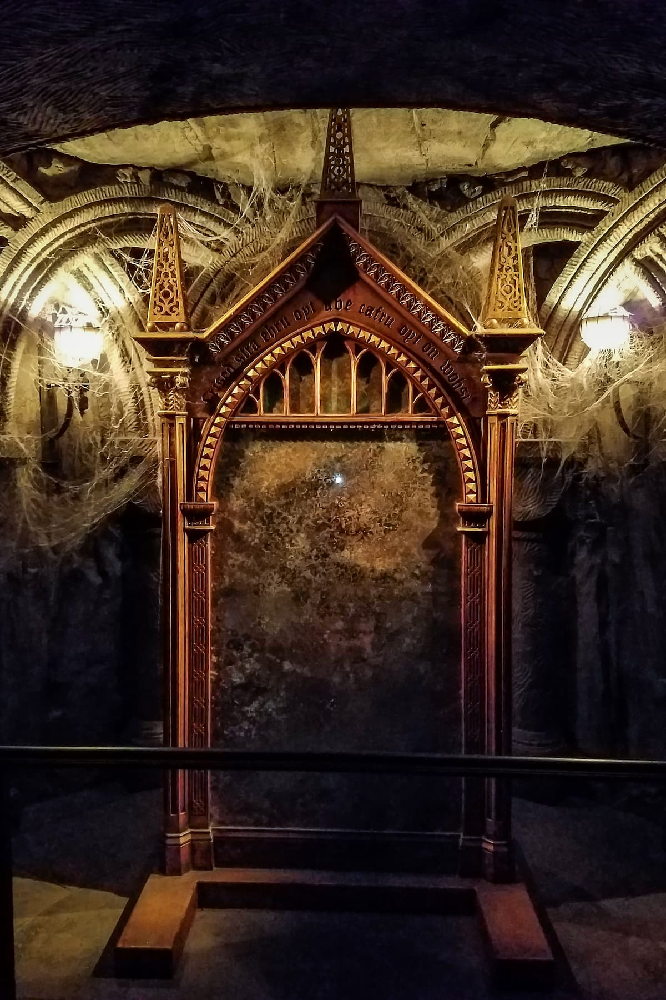

El Espejo de Erised
Una noche sin sueño en Hogwarts
Es pasada la medianoche y el castillo respira en silencio. Vas a acompañar a Harry en un recorrido a escondidas por pasillos que cambian de lugar, retratos que dormitan y puertas que nadie recuerda haber abierto.
En cada página vas a elegir el camino. Algunas decisiones te acercan a un secreto antiguo; otras te devuelven al punto de partida. La historia tiene dos finales posibles.

Antes de empezar
El espejo de Erised no era un simple objeto mágico. Era un artefacto único, antiguo, de marco dorado y de origen desconocido. Su poder: mostrar lo que el corazón más anhelaba.
Música para la travesía
Esta música sirve para crear ambiente mientras recorrés el castillo. Si no se escucha, activá el sonido con el ícono del parlante del video.